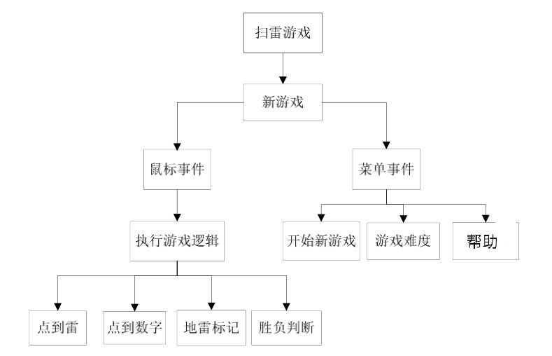
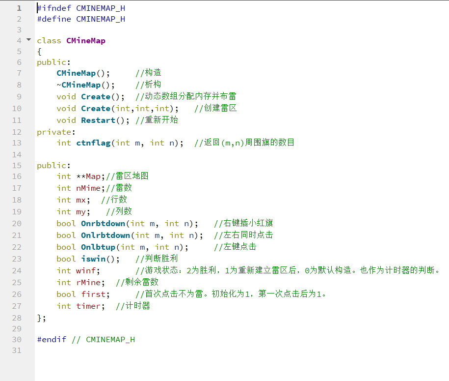
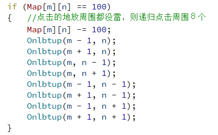
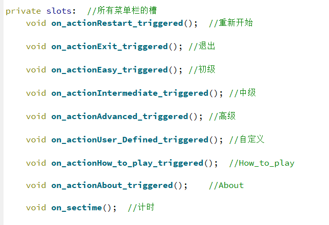
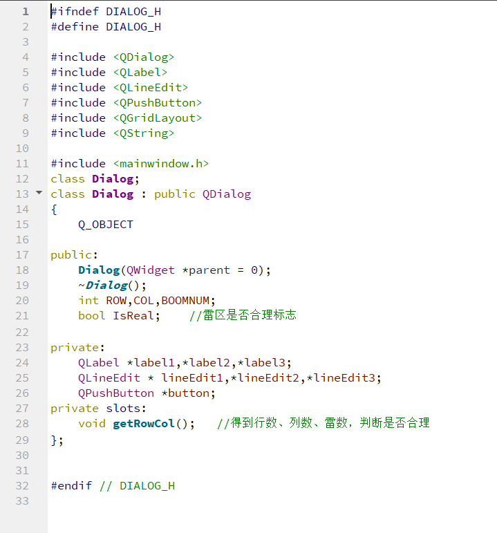
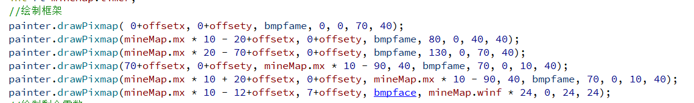
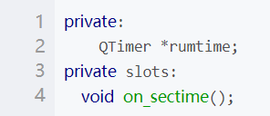

MineSweeper
项目简介
本项目以Qt为开发环境，设计并开发一款类似windows xp系统上的经典游戏：扫雷。这款经典的游戏不仅可以让人们充分享受娱乐，还可以锻炼人的逻辑推理能力和判断能力。
用户界面由一定数量的小方格组成的方块构成。当游戏开始时，计算机将随机设置雷区。此游戏还允许玩家调整难度。
项目源码地址
总体规划

实现需求并展示
扫雷以满足用户娱乐、益智为宗旨，以用户需求为导向，实现以下主要功能：
游戏的初始化
雷区的随机自动生成
重新开始功能
第一次点击不为雷设置
菜单栏功能的实现
游戏难度的选择
自定义游戏难度
对游戏时间进行计时
对剩余雷数进行统计
绘制好游戏框架，实现笑脸重新开始功能
鼠标的不同点击事件（左键、右键、左右键同时按）
Help菜单栏的两项具体内容
具体实现介绍
CMineMap类
_ 首先我先自己定义了一个CMineMap类来实现所有扫雷相关的操作：_

其中 Create( ) 和 Create(int, int, int) 都是通过先释放Map的空间，再根据行数、列数、雷数动态的申请空间，设好行数、列数、雷数，最后是调用Restart( ) 函数实现的。
ctnflag函数是统计（m，n）这个格子下四周的🚩数目，方便后面左右键一起点击事件的判定
Map使用指针方便动态分配空间
在未被点开时，Map(m)(n) 取值范围为 99–108
- 其中99代表雷， 100–108代表周围雷的数目
在点开时，Map(m)(n) 取值范围为 -1 – 8
- 其中-1代表雷， 0–8代表周围雷的数目
在插旗时，Map 取值范围49–58
- 49代表雷， 50–58雷数
函数介绍
点击事件
左击事件
当一个格子（坐标为(x,y)）被点下，如果个格子周围有雷，则Map[x][y]值为101-108，将这个值减去100就行了
重点：
如果周围都没有雷，就会爆出一大片。
刚开始感觉很难实现，这形状完全不规则，一行行一列列去检测都难以实现．但仔细一想其实这个问题很好解决，当点下发现这地方周围都没雷的时候就递归的点击周围８个格子就行了。

- first代表第一次点击的flag，点击后将flag设为0
右击事件
右击一下插个红旗，在点一下小旗取消，实现起来很简单，点一下减50再点下加50就行了。
左右键同时按下
如果一个格子周围所有雷都被标记，在这个格子上同时按下鼠标左右键，剩余未被点开的格子就会全被点开．实现起来也不难，调用函数周围都点一遍就行了。
Help菜单栏
about和How to play直接使用QMessageBox
game菜单栏

自定义菜单子页面
子页面没有用设计师界面类

较为简单，于是直接使用代码设置界面：
自定义设置并检测设置是否合理
IsReal是作为雷区是否合理的flag
绘制
雷区
框架

winf可以作为flag，选择不同的笑脸。
剩余雷数
进行时间
QPainter是Qt中的一个绘图类，用该类中的drawPixmap函数来贴图片．
drawPixMap这个函数做的很完善，这个函数有11个同名函数，我用的是这一个
可以绘制 一部分 图像，可以剪切大小
void drawPixmap(int x, int y, const QPixmap & pixmap, int sx, int sy, int sw, int sh)鼠标消息处理
Qt 中添加鼠标消息很容易，直接重载父类的mousePressEvent函数
通过event->button()和event->buttons()可以获取到底是哪个键被按下
通过event->x()和event->y()获取鼠标按下的坐标。根据这个坐标计算出点到哪一格，然后调用扫雷类的相关操作。
计时器
